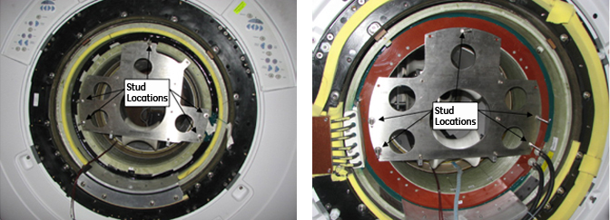
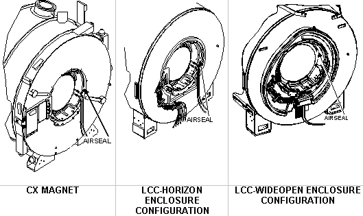
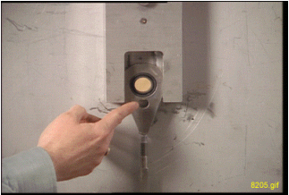
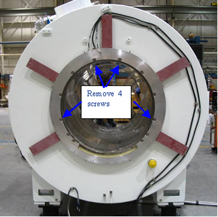
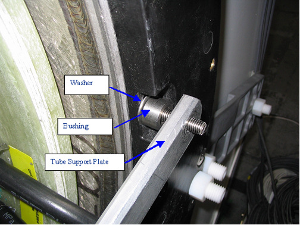
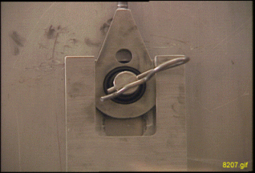
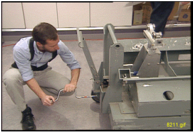
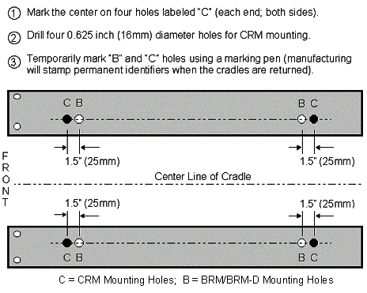
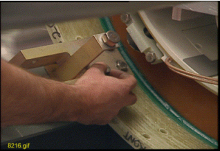
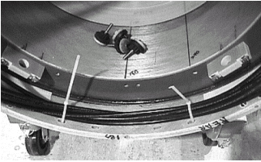

Defective Gradient Coil Removal
Prerequisites
Overview
It is strongly recommended that the 38-minute video tape (P/N EVT624) of an actual BRM replacement be reviewed before attempting this complex procedure. The video tape entitled, “New BRM Installation Procedure for Conquest CX Magnet,” will be shipped with the BRM Insertion Tool Kit required to perform this replacement.
The replacement of a CRM or BRM-D is identical to the BRM except where noted in this procedure. Contact your Zone MAC Team representative to identify an individual trained to assist with this procedure. This procedure describes the removal and replacement of the combined RF and Gradient Body Coils in the various Signa Horizon systems with Cx, LCC, and WideOpen Enclosure Magnets.
1 Lock-Out Tag-out
2 Using Gradient Insertion Tool
Changes were made to the Gradient Insertion tool, part 2164744-6 and greater (such as 2164744-7). Use the parts noted below when replacing either the BRM or TRM.
Procedure
- Attach plates 5161983 and 5161985 to either the BRM or TRM gradient
coil. Secure to gradient coil using M10 x 80 studs (locations shown
below). Thread the studs at least 1/4 inch (6 mm) into the coil. The
CRM gradient coil will have two separate plates (P/N 2187590).
Figure 1. Gradient Mounting Plates

- Attach Rear Plate to the magnet as shown below. There are standoffs
on this plate that should remain in place. Secure Rear Plate to magnet
using M10 x 80 studs, washers and M10 nut.
Figure 2. Attaching Rear Plate to Magnet

- Obtain the Male Insertion Tube (2284929) and XRMB Tube Standoff
(5191626).
- Attach the Tube Standoff to the Male Insertion Tube using the 4-inch, 0.375-16 UNC Hex Socket Screw (5303993) included in the Gradient Coil Insertion and Lift Kit.
- Once the Standoff is secured to the Tube, attach the Tube Pilot
Shaft to the Standoff as shown below.
Figure 3. Attaching Standoff to Insertion Tube

3 Gradient Coil Replacement
Procedure
- notice
- Remove the air seal (shown below) from around the Gradient Coil.
Figure 4. Remove Airseal

- Remove the Terminal Block located on the rear flange of the magnet. See Figure 5. (The Terminal Block is not used with the BRM-D and MR/i and CV/i WideOpen systems.)
- Loosen and remove the Gradient Coil radial support blocks and
support brackets from both ends of the Gradient Coil Assembly using
a 24 mm socket and ratchet.
Figure 5. Remove Terminal Block

- Verify the Gradient Cables (shown below) from Gradient Coil
were cut and terminated per Gradient Cable Install. See Figure 6.
Figure 6. Location To Cut Cables
 note:
note:Save these parts for installing onto the new Gradient Coil assembly later. Be careful not to bend the RF cables and bias cables. A bend radius less than 6 inches (152.4 mm) will damage the cables.

- notice
- Remove the two Tube Guide Roller Assemblies from the crate. (It may be necessary to exchange the rollers to the appropriate BRM or CRM Plate Assembly).
Figure 7. Tube Guide Roller Assembly

- Install one Assembled Tube Guide Roller Assembly onto each end
of the Gradient Coil as shown.
Figure 8. Install Tube Guide Roller Assembly

- The kit contains two M10 x 120 studs. Insert each stud at least
1/4 in. (6 mm) into the Gradient Insertion Tool at the top hole location.
(The stud will support the Tube Guide Roller Assembly and will assist
the alignment of the remaining bolts.)note:
If using Gradient Insertion Tool (P/N 2164744-6 or greater), use Mounting Plates (P/N 5161983 and 5161985) shown below.
Figure 9. Gradient Plates for 2164744-6 or Greater

- Use the M10 x 80 bolts, supplied in the kit, to secure the studs
using a 17 mm socket and ratchet.note:
Each assembly requires four bolts and one stud.
- Install one Assembled Tube Guide Roller Assembly onto each end
of the Gradient Coil as shown.
- Remove the Tube Support Plate Assembly from the crate.
Figure 10. Tube Support Plate Assembly

- Adjust the Alignment Bearing for center position as viewed from
the side with the round cut out.
Figure 11. Alignment Bearing to Center Position

note:Use an adjustable wrench for the vertical adjustment for older Gradient Insertion Kits. Newer kits contain a wrench.
-
For the vertical adjustment a clockwise rotation results in the alignment bearing moving down.
-
For the horizontal adjustment a clockwise rotation results in the alignment bearing moving to the left. Use the 3/8 in. (12 mm) T-bar Allen wrench for the horizontal adjustment.
-
- If using Gradient Insertion Tool (2164744-6 or greater), use the Tube Support Plate shown below.
Figure 12. Tube Support Plate for Gradient Insertion Tool

- notice
- Adjust the Alignment Bearing for center position as viewed from
the side with the round cut out.
- To properly install the Tube Support Plate Assembly onto an
HDx magnet with a Metallic Turtle Bracket:
- Remove four screws from the Turtle Bracket so the Tube Support
Plate can be installed.
Figure 13. Metallic Turtle Bracket

- Install four of the M10 x 60 studs into the Turtle Bracket openings from which the screws were removed. Place Never Seeze, P/N 46-294151P8 onto the studs that will thread into the magnet.
- notice
- Place bushings on all four studs in all locations as shown.
Figure 14. Tightening Stud

- Tighten the stud that will support the weight of the Tube Support
Plate Assembly, then tighten the nut onto the stud as shown below.
Next, proceed to Step 9.
Figure 15. Placing Bushing on Stud

- Remove four screws from the Turtle Bracket so the Tube Support
Plate can be installed.
- To properly install the Tube Support Plate Assembly onto an
HDx magnet with a Black or Molded Turtle Bracket:
- Remove four screws from the Turtle Bracket so the Tube Support Plate can be installed.
- Install four of the M10 x 60 studs into the Turtle Bracket openings
from which the screws were removed. Place Never Seeze, P/N 46-294151P8
onto the studs that will thread into the magnet.
Figure 16. HDx Magnet with Molded or Black Turtle Ring

- notice
- Place a washer and bushing at the locations shown above and
below.
Figure 17. Installation of Bushing and Washer

- Tighten the stud that will support the weight of the Tube Support Plate Assembly, see Figure 14that will support the weight of the Tube Support Plate Assembly.
- Go to the rear of the magnet and Install the Tube Support Plate
onto the end flange as shown below.
Figure 18. Securing Tube Support Plate to End Flange
 note:
note:Be aware of the following:
-
For magnets with a Horizon Enclosure, use the existing enclosure end bell studs and nuts for securing the plate to the end flange.
-
For magnets with a Wide Open Enclosure, use the M10 X 25 studs supplied with the insertion tool. Make sure the plate does not crimp or pinch the gradient cables.
-
- Attach Tube Support Plate to the magnet as shown. (Studs are
not needed when using this plate since standoffs are built into the
plate.)
Figure 19. Tube Support Plate Attached to Magnet

- Remove the Male Tube Assembly from the crate, and remove the cotter pin from the shaft.
- View video for tub insertion. Slowly install the tube (shaft
end first) through the front Tube Guide Roller Assembly, then through
the rear Tube Guide Roller Assembly, and finally guide the shaft through
the alignment bearing.note:
Do not force the shaft through the alignment bearing. Make vertical or horizontal adjustments to bring the alignment bearing into alignment with the tube shaft.
- Install the cotter pin after the shaft is in place as shown
below.
Figure 20. Cotter Pin Installation

 warning
warning- Remove the Female Tube Assembly from the crate. Support the Female Tube Assembly on the Tube Jack Assembly, then thread it onto the Male Tube Assembly.
- Remove the Tube Jacking Assembly from the crate as shown, and
install it onto the empty cart cradle assembly outside of the Magnet
Room, and secure it with a bolt through Tube Jacking Assembly base
plate as shown in Figure 22 .
Figure 21. Removing Tube Jacking Assembly

Figure 22. Securing Tube Jacking Assembly

- warning
- Remove the Gradient Coil Cradle Fasteners (two per side) from
the cradle as shown.
Figure 23. Removing Gradient Coil Cradle Fasteners

- Move the empty cart cradle assembly into the Magnet Room. Lift
the Tube Assembly and set it onto the Tube Jacking Assembly.
- Position the cart in front of the magnet, and center the cart left to right relative to the patient bore.
- Make sure the Tube Jacking Assembly is physically centered and the left/right adjustments are at a nominal setting before starting the next step.
- Use a 5/16 inch, right-angle Allen wrench to tighten the Tube Jacking Assembly to the cart/cradle. Do not overtighten two poles, as it may be difficult to separate them after coil replacement.
- Use a 19 mm socket to adjust the height so the end of the cart
cradle is the same height as the warm bore of the magnet and flush
against the end flange as shown in Figure 25.
Figure 24. Adjusting Cart Cradle Height

Figure 25. Adjusting Cart Height to Warm Bore Height

- Release the hand lever on the cart handle to set the brakes on the cart and prevent it from moving after it is aligned to the magnet bore.
- notice
- Operate the jack to raise the tube, and watch for the tube to make contact with the upper roller on the front Tube Guide Roller Assembly.
- Go to the rear of the magnet. Adjust the Alignment Bearing in
the vertical direction, and watch for the tube to make contact with
the upper roller on the rear Tube Guide Roller Assembly. (See Figure 26.
Figure 26. Adjusting Alignment Bearing
 note:
note:Make sure there is a small amount of resistance to the upward movement of the tube. The top roller should not be able to rotate.
- If the bolts are present: Go to the front of the magnet. Loosen
and remove the four bolts from the Gradient Coil bracket that attaches
it to the end flange bracket using a 17 mm socket and ratchet.
Figure 27. Removing Bolts from Gradient Coil Bracket
 note:
note:Some magnets have rubber pads installed between the Gradient Coil Bracket and the Magnet End Flange Bracket as shown below. This configuration utilizes special hardware, and does not use the mounting bolts.
Figure 28. Gradient Isolation Configuration

- Check the tube with a level on top of the female Tube Assembly. Make any adjustments with either the jack in the front or the Alignment Bearing in the rear.
- If the bolts are present: Go to the rear of the magnet. Loosen and remove the four bolts from the Gradient Coil bracket that attaches it to the end flange bracket using a 17 mm socket and ratchet.
- Go to the front of the magnet. Operate the jack to raise the tube, and watch for the Gradient Coil Bracket to raise up and off the End Flange Bracket. (A gap of 1/8 in. or 2 mm is sufficient.) Make sure there is no contact with the warm bore or bore passive shims.
- Remove the End Flange Bracket from the front end of the bore using a 17 mm socket and ratchet.
- Go to the rear of the magnet. Adjust the Alignment Bearing in the vertical direction, and watch for the Gradient Coil bracket to raise up and off the End Flange Bracket. (A gap of 1/8 in. or 2 mm is sufficient.) Make sure there is no contact with the warm bore or bore passive shims.
- If this site has the Gradient Isolation Kit, remove the rubber
pads between the Gradient Coil Bracket and the End Flange Bracket.note:
Do not remove the end flange bracket on the rear of the magnet.
- Go to the front of the magnet. Verify there is sufficient clearance all around the Gradient Coil for removal onto the cradle and cart.
- caution
- notice
- notice
- Slowly pull the Gradient Coil forward on the tube, and watch the clearance around the Coil to ensure it is concentric and level with the bore.
- notice
- Continue to move the Coil over the cart until it is half way
out, just before the cradle gusset near the Jacking Assembly.
- Remove the Gradient Coil Support Bracket from the front end of the Gradient Coil. Access the eight Allen head bolts (located below the Gradient Coil) using a 17 mm socket and 8 mm Allen wrench. See Figure 27.
- Remove the three bolts securing the bracket to the coil.
- Remove the two Gradient Coil Roller assemblies (shown in Figure 29.note:
If using the newer Gradient Insertion Tool (2164744-6 or greater), the Gradient Coil Rollers are not needed, as the Jacking Assembly is thinner.
Figure 29. Gradient Coil Roller Assemblies

- Remove the roller and pin from the Gradient Coil Roller assemblies.
- Install the Gradient Coil Roller assemblies onto the front end of the Gradient Coil using a 17 mm socket.
- Make sure the roller brackets are in line with the shipping bracket holes on the cradle. This alignment is necessary for installing the shipping blocks later in the procedure.
- caution
- Adjust the jacking screws on the roller block to raise the coil high enough for installation of the rollers.
- Install the rollers onto the brackets.
- Slowly lower the jack to allow the Gradient Coil weight to transfer to the Gradient Coil rollers.
- caution
- Remove the bolt from the Tube Jacking Assembly baseplate, remove the jack and take it out of the Magnet Room. (The cradle is now clear to allow movement of the Gradient Coil forward onto the cart.)
- With three FEs pulling from the front, move the Gradient Coil
over the cradle so it is centered from front to back on the cradle.note:
It may be necessary to lower the cart to allow the back end of the Gradient Coil to clear the cradle.
- notice
- Before removing the rollers, make sure the shipping bracket
holes for the Gradient Coil will line up with the holes on the cradle
of the cart.
-
The BRM, BRM-D and CRM each have unique holes in the cart for shipping. Be sure to align the BRM, BRM-D or CRM to the respective holes on the shipping cart.
-
It may be necessary to rotate the Gradient Coil and/or move forward or back on the cradle to align the holes. (An installed shipping block is shown below.)
Figure 30. Installed Gradient Coil Shipping Blocks
 note:
note:The Aluminum Cradle for BRM (2134810-3), used to replace a BRM in a CX magnet, must be modified for the longer CRM. Additional front and rear stop block mounting holes (labeled “C” for “CRM”) are being added to the aluminum cradles sent with BRM and CRM FRUs from headquarters. Field cradles returned with failed BRMs and CRMs will also be upgraded by manufacturing as necessary. If an unmodified service aluminum cradle will be used to return a failed CRM, it must be field modified per Figure 31, before shipment.
Figure 31. Coil Cradle Mounting Holes

-
- Slowly lower the back end of the Gradient Coil onto the cradle by lowering the alignment bearing at the back end of the magnet.
- caution
- Adjust the jacking screws on the roller block for wheel removal, remove the rollers and pins, then adjust the jacking screws to lower the Gradient Coil onto the cradle.
- notice
- Remove the front and rear spacers on the Gradient Coil being
careful not to interchange them. The front spacer must go on the front
location of the replacement coil. (The location of an installed spacer
is shown.)
Figure 32. Spacer Location

- Remove the Gradient Coil Roller Bracket Assemblies as shown.
Figure 33. Removing BRM Roller Bracket Assemblies

- notice
- Adjust the cart height and the vertical adjustment of the Alignment
Bearing to remove the load from the top rollers inside the Gradient
Coil.
Figure 34. Damaged Alignment Bearing

- Retrieve the rope supplied in the kit, and route it under the
Support Tube between the end flange of the magnet and the Gradient
Coil. Attach the rope to the enclosure frame brackets on the Cryostat.
Adjust the height of the rope so it provides support for the tube
during the disassembly process.
- notice
- Unthread the tube leaving one section in the bore (supported by the rope and Tube Support Plate Assembly), and leave the other section in the Gradient Coil on the cart.
- For the BRM-D and CRM Coils, loop the long gradient cables inside
the gradient and tie-wrap them to prevent damage during shipment as
shown in the two illustrations below.
Figure 35. Cables Tie-Wrapped Inside Coils

Figure 36. Tie-Wrapped Cables

- Release the brake on the cart, and slowly back the cart with the Coil out of the Magnet Room.
- Proceed to Gradient Coil Installation .
|
|
Make sure there is a small amount of resistance to the upward movement of the tube. The top roller should not be able to rotate.
 |
|
|
|
The rollers will be used to transfer the load from the Support Tube to the Gradient Coil and Cart at this end of the Gradient Coil. The load at the other end of the Gradient Coil will still be supported by the Support Tube and Tube Support Plate Assembly.
|
|
|
|
|
|
4 What to do next
Finalization
No finalization steps.